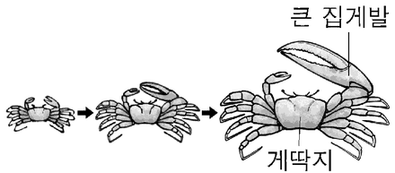

클라이버의 법칙
지문을 먼저 읽고, 이해가 막히는 문단에서 ‘그림으로 보기’를 누르세요. 그림은 문단을 따라 바뀝니다.
1문단하루에 필요한 에너지의 양은 하루 동안의 총 열량 소모량인 대사량으로 구한다. 그중 기초 대사량은 생존에 필수적인 에너지로, 쾌적한 온도에서 편히 쉬는 동물이 공복 상태에서 생성하는 열량으로 정의된다. 이때 체내에서 생성한 열량은 일정한 체온에서 체외로 발산되는 열량과 같다. 기초 대사량은 개체에 따라 대사량의 60～75%를 차지하고, 근육량이 많을수록 증가한다.
2문단기초 대사량은 직접법 또는 간접법으로 구한다. ㉠직접법은 온도가 일정하게 유지되고 공기의 출입량을 알고 있는 호흡실에서 동물이 발산하는 열량을 열량계를 이용해 측정하는 방법이다. ㉡간접법은 호흡 측정 장치를 이용해 동물의 산소 소비량과 이산화 탄소 배출량을 측정하고, 이를 기준으로 체내에서 생성된 열량을 추정하는 방법이다.
3문단19세기의 초기 연구는 체외로 발산되는 열량이 체표 면적에 비례한다고 보았다. 즉 그 둘이 항상 일정한 비(比)를 갖는다는 것이다. 체표 면적은 (체중)0.67에 비례하므로, 기초 대사량은 체중이 아닌 (체중)0.67에 비례한다고 하였다. 어떤 변수의 증가율은 증가 후 값을 증가 전 값으로 나눈 값이므로, 체중이 W에서 2W로 커지면 체중의 증가율은 (2W)/(W)＝2이다. 이 경우에 기초 대사량의 증가율은 (2W)0.67/(W)0.67＝20.67, 즉 약 1.6이 된다.
4문단1930년대에 클라이버는 생쥐부터 코끼리까지 다양한 크기의 동물의 기초 대사량 측정 결과를 분석했다. 그래프의 가로축 변수로 동물의 체중을, 세로축 변수로 기초 대사량을 두고, 각 동물별 체중과 기초 대사량의 순서쌍을 점으로 나타냈다.
5문단가로축과 세로축 두 변수의 증가율이 서로 다를 경우, 그 둘의 증가율이 같을 때와 달리, ‘일반적인 그래프’에서 이 점들은 직선이 아닌 어떤 곡선의 주변에 분포한다. 그런데 순서쌍의 값에 상용로그를 취해 새로운 순서쌍을 만들어서 이를 <그림>과 같이 그래프에 표시하면, 어떤 직선의 주변에 점들이 분포하는 것으로 나타난다. 그러면 그 직선의 기울기를 이용해 두 변수의 증가율을 비교할 수 있다. <그림>에서 X와 Y는 각각 체중과 기초 대사량에 상용로그를 취한 값이다. 이런 방식으로 표현한 그래프를 ‘L-그래프’라 하자.
6문단체중의 증가율에 비해, 기초 대사량의 증가율이 작다면 L-그래프에서 직선의 기울기는 1보다 작으며 기초 대사량의 증가율이 작을수록 기울기도 작아진다. 만약 체중의 증가율과 기초 대사량의 증가율이 같다면 L-그래프에서 직선의 기울기는 1이 된다.
7문단이렇듯 L-그래프와 같은 방식으로 표현할 때, 생물의 어떤 형질이 체중 또는 몸 크기와 직선의 관계를 보이며 함께 증가하는 경우 그 형질은 ‘상대 성장’을 한다고 한다. 동일 종에서의 심장, 두뇌와 같은 신체 기관의 크기도 상대 성장을 따른다.
8문단한편, 그래프에서 가로축과 세로축 두 변수의 관계를 대변하는 최적의 직선의 기울기와 절편은 최소 제곱법으로 구할 수 있다. 우선, 그래프에 두 변수의 순서쌍을 나타낸 점들 사이를 지나는 임의의 직선을 그린다. 각 점에서 가로축에 수직 방향으로 직선까지의 거리인 편차의 절댓값을 구하고 이들을 각각 제곱하여 모두 합한 것이 ‘편차 제곱 합’이며, 편차 제곱 합이 가장 작은 직선을 구하는 것이 최소 제곱법이다. 클라이버는 이런 방법에 근거하여 L-그래프에 나타난 최적의 직선의 기울기로 0.75를 얻었고, 이에 따라 동물의 (체중)0.75에 기초 대사량이 비례한다고 결론지었다. 이것을 ‘클라이버의 법칙’이라 하며, (체중)0.75을 대사 체중이라 부른다. 대사 체중은 치료제 허용량의 결정에도 이용되는데, 이때 그 양은 대사 체중에 비례하여 정한다. 이는 치료제 허용량이 체내 대사와 밀접한 관련이 있기 때문이다.
윗글을 바탕으로 <보기>를 탐구한 내용으로 가장 적절한 것은? [3점]
농게의 수컷은 집게발 하나가 매우 큰데, 큰 집게발의 길이는 게딱지의 폭에 ‘상대 성장’을 한다. 농게의 ⓐ 게딱지 폭을 이용해 ⓑ 큰 집게발의 길이를 추정하기 위해, 다양한 크기의 농게의 게딱지 폭과 큰 집게발의 길이를 측정하여 다수의 순서쌍을 확보했다. 그리고 ‘L-그래프’와 같은 방식으로, 그래프의 가로축과 세로축에 각각 게딱지 폭과 큰 집게발의 길이에 해당하는 값을 놓고 분석을 실시했다.

그림: 농게가 자라면서 게딱지보다 큰 집게발이 훨씬 커지는 모습">